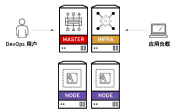

# cat /etc/redhat-release
Red Hat Enterprise Linux Server release 7.5 (Maipo)OpenShift 容器平台安装
Table of Contents
安装概述
OpenShift 容器平台由红帽公司以 RPM 软件包和容器镜像的组合形式交付。RPM 软件包可通过订阅从标准的红帽 YUM 源下载，容器镜像则来自红帽私有容器仓库(https://access.redhat.com/containers/)下载。
OpenShift 容器平台安装需要多台服务器，它们可以是物理机和虚拟机的任意组合。其中一些称为管理节点，一些则为计算节点，还有基础设施节点，如下图为一安装架构图,

通常，这些不同的节点分别需要不同的软件包和配置。为了方便安装，可以基于 Ansible 进行安装，通过 Ansible Playbook 脚本来自动化相关的安装流程。具体 OpenShift 安装分三个阶段：
-
准备安装 - 包括 YUM 源配置，容器镜像下载，相关软件的下载安装，容器镜像下载与本地容器镜像仓库配置等
-
安装 - 执行 Ansible Playbook 脚本安装
-
后续安装 - 安全认证配置，等
安装架构说明
如下表所示，OpenShift 安装需要 6 台服务器，
| ip 地址 | 域名 | 说明 |
|---|---|---|
10.66.208.101 |
master.example.com |
管理节点 |
10.66.208.102 |
infra.example.com |
基础设施节点（内部镜像仓库、日志、监控） |
10.66.208.103 |
node1.example.com |
计算节点 |
10.66.208.104 |
node2.example.com |
计算节点 |
10.66.208.105 |
nfs.example.com |
NFS 服务器 |
10.66.208.106 |
support.example.com |
|
6 台服务器都安装的是 Linux 操作系统
静态 IP 地址配置
在 master, infra, nfs, node1, node2 分别配置 IP 地址为静态 IP 地址
hostnamectl set-hostname master.example.com
nmcli connection modify eth0 ipv4.addresses 10.66.208.101/24
nmcli connection modify eth0 ipv4.gateway 10.66.208.254
nmcli connection modify eth0 ipv4.method manual
nmcli connection modify eth0 connection.autoconnect yes
nmcli connection reload
nmcli connection up eth0
hostnamectl set-hostname infra.example.com
nmcli connection modify eth0 ipv4.addresses 10.66.208.102/24
nmcli connection modify eth0 ipv4.gateway 10.66.208.254
nmcli connection modify eth0 ipv4.method manual
nmcli connection modify eth0 connection.autoconnect yes
nmcli connection reload
nmcli connection up eth0
hostnamectl set-hostname node1.example.com
nmcli connection modify eth0 ipv4.addresses 10.66.208.103/24
nmcli connection modify eth0 ipv4.gateway 10.66.208.254
nmcli connection modify eth0 ipv4.method manual
nmcli connection modify eth0 connection.autoconnect yes
nmcli connection reload
nmcli connection up eth0
hostnamectl set-hostname node2.example.com
nmcli connection modify eth0 ipv4.addresses 10.66.208.104/24
nmcli connection modify eth0 ipv4.gateway 10.66.208.254
nmcli connection modify eth0 ipv4.method manual
nmcli connection modify eth0 connection.autoconnect yes
nmcli connection reload
nmcli connection up eth0
hostnamectl set-hostname nfs.example.com
nmcli connection modify eth0 ipv4.addresses 10.66.208.105/24
nmcli connection modify eth0 ipv4.gateway 10.66.208.254
nmcli connection modify eth0 ipv4.method manual
nmcli connection modify eth0 connection.autoconnect yes
nmcli connection reload
nmcli connection up eth0
hostnamectl set-hostname support.example.com
nmcli connection modify eth0 ipv4.addresses 10.66.208.106/24
nmcli connection modify eth0 ipv4.gateway 10.66.208.254
nmcli connection modify eth0 ipv4.method manual
nmcli connection modify eth0 connection.autoconnect yes
nmcli connection reload
nmcli connection up eth0禁用 libvirtd
在 master, node1, node1 禁用 libvirtd, 并重起系统(Optional: 如果 RHEL 安装在 KVM 之上，这一步是必须)。
systemctl stop libvirtd.service
systemctl disable libvirtd.service
reboot设置 KVM 恢复快照
在操作控制节点(KVM 宿主机)创建快照(Optional: 本部分只适用 KVM 虚拟机)。
1 - 创建快照
# qemu-img snapshot -c 2018-08-23 /var/lib/libvirt/images/master.qcow2
# qemu-img snapshot -c 2018-08-23 /var/lib/libvirt/images/infra.qcow2
# qemu-img snapshot -c 2018-08-23 /var/lib/libvirt/images/nfs.qcow2
# qemu-img snapshot -c 2018-08-23 /var/lib/libvirt/images/node1.qcow2
# qemu-img snapshot -c 2018-08-23 /var/lib/libvirt/images/node2.qcow22 - 查看快照
# qemu-img snapshot -l /var/lib/libvirt/images/master.qcow2
# qemu-img snapshot -l /var/lib/libvirt/images/infra.qcow2
# qemu-img snapshot -l /var/lib/libvirt/images/nfs.qcow2
# qemu-img snapshot -l /var/lib/libvirt/images/node1.qcow2
# qemu-img snapshot -l /var/lib/libvirt/images/node2.qcow23 - 恢复快照(Optional: 只在需要恢复时执行)
# qemu-img snapshot -a 2018-08-23 /var/lib/libvirt/images/master.qcow2
# qemu-img snapshot -a 2018-08-23 /var/lib/libvirt/images/infra.qcow2
# qemu-img snapshot -a 2018-08-23 /var/lib/libvirt/images/nfs.qcow2
# qemu-img snapshot -a 2018-08-23 /var/lib/libvirt/images/node1.qcow2
# qemu-img snapshot -a 2018-08-23 /var/lib/libvirt/images/node2.qcow2